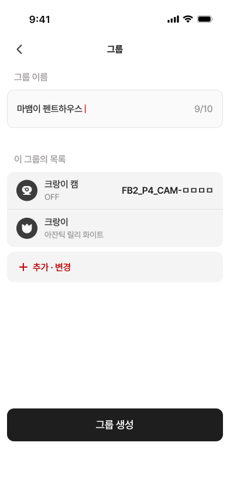
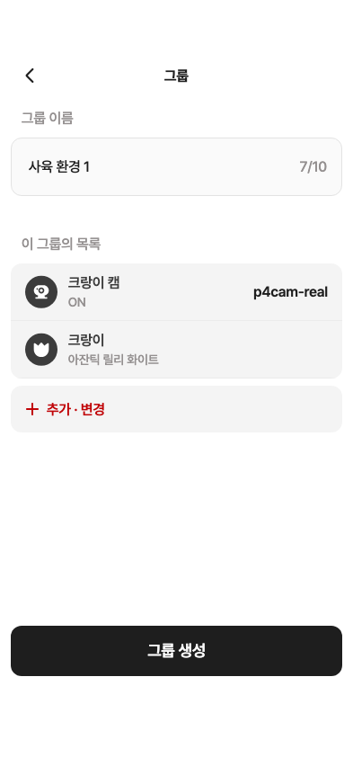

18 · 그룹 생성 전 최종 확인
17번 오류 화면 승인 완료 · 다음 화면 검수
수정 제안: ‘추가·변경’ 아이콘과 글자를 약4pt 오른쪽으로, 글자 줄높이를19→28pt로 맞추기. 아직 코드 수정 전입니다.
Figma 원본 · 393×852
18 · 현재 제품 위젯 캡처
입력창·목록·하단 버튼의 위치/크기와 주요 폰트·색상을 측정했습니다. 구성원 아이콘 y에는 ±0.25pt 차이가 있습니다.
앱 이미지는 위젯 테스트 캡처이며 실제 시뮬레이터 스크린샷은 아닙니다. 이름·ID·글자 수와 ON/OFF는 데이터 및 기존 승인 정책 차이입니다.
상세 측정 및 확인 범위